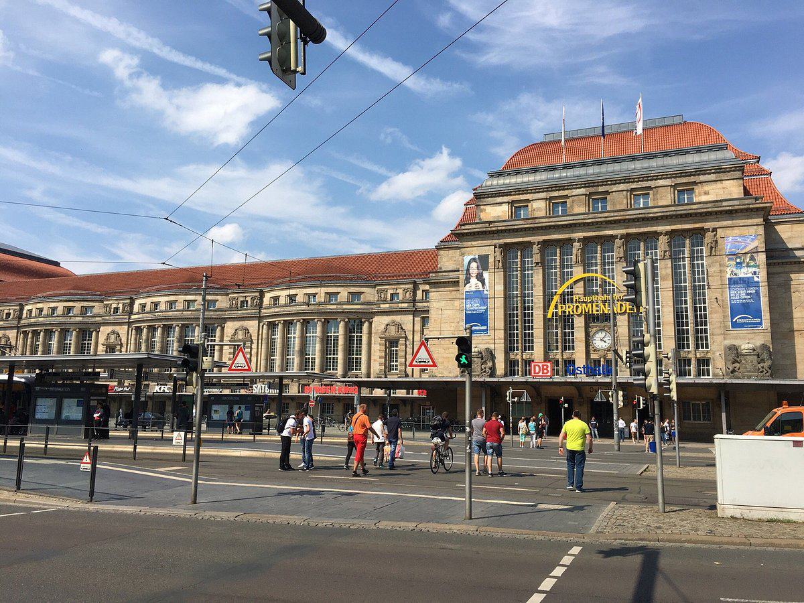
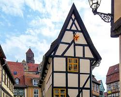
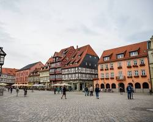
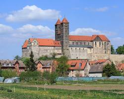
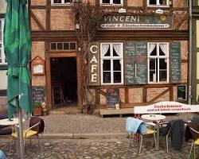
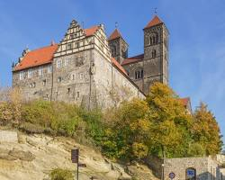
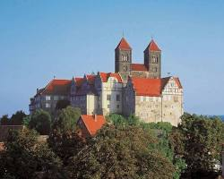
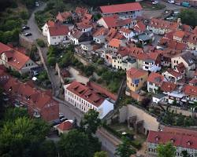
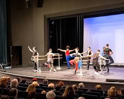
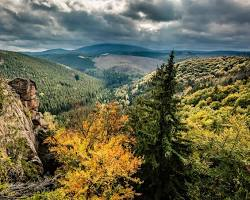

Click in any field below to hear the sentence read aloud.

Click in any field below to reveal a translation.
| Auf geht's nach Quedlinburg! Dieser pittoreske Ort im Harzvorland ist perfekt für einen Tagesausflug von Leipzig aus. Freuen Sie sich auf Fachwerkpracht, romantische Gassen, kulturelle Schätze und atemberaubende Ausblicke. |
Let's go to Quedlinburg! This picturesque town in the Harz foothills is perfect for a day trip from Leipzig. Look forward to half-timbered splendor, romantic alleys, cultural treasures and breathtaking views.
| Vormittag: Starten Sie Ihren Tag früh in Leipzig und nehmen Sie den Zug nach Quedlinburg (etwa 1,5 Stunden Fahrzeit). |
 |
Morning:
Start your day early in Leipzig and take the train to Quedlinburg (about 1.5 hours travel time).
Start your day early in Leipzig and take the train to Quedlinburg (about 1.5 hours travel time).
| Vom Bahnhof sind es nur wenige Schritte zur historischen Altstadt. Tauchen Sie ein in ein Labyrinth aus Fachwerkhäusern, kopfsteingepflasterten Gassen und charmanten Plätzen. |  |
From the train station it is only a few steps to the historic old town. Immerse yourself in a labyrinth of half-timbered houses, cobblestone streets and charming squares.
| Besuchen Sie den Marktplatz, das Herz der Stadt, und bewundern Sie das prächtige Rathaus im Renaissancestil. |  |
Visit the market square, the heart of the city, and admire the magnificent Renaissance-style town hall.
| Machen Sie einen Abstecher zur Stiftskirche St. Servatius und St. Cyriakus, einem UNESCO-Weltkulturerbe. Entdecken Sie den Domschatz, der zu den bedeutendsten romanischen Kirchenschätzen Deutschlands zählt. |  |
Take a detour to the Collegiate Church of St. Servatius and St. Cyriacus, a UNESCO World Heritage Site. Discover the cathedral treasure, which is one of the most important Romanesque church treasures in Germany.
| Mittag: Genießen Sie ein leckeres Mittagessen in einem der gemütlichen Restaurants oder Cafés in der Altstadt. Probieren Sie regionale Spezialitäten wie Quedlinburger Spargel oder Harzer Schnitzel. |
 |
Midday:
Enjoy a delicious lunch in one of the cozy restaurants or cafés in the old town. Try regional specialties such as Quedlinburg asparagus or Harzer schnitzel.
Enjoy a delicious lunch in one of the cozy restaurants or cafés in the old town. Try regional specialties such as Quedlinburg asparagus or Harzer schnitzel.
| Nachmittag: Besuchen Sie die Burg Quedlinburg, die hoch über der Stadt thront. Erkunden Sie die romanische Doppelkapelle, den Schlossgarten und genießen Sie den herrlichen Ausblick auf das Harzvorland. |
 |
Afternoon:
Visit Quedlinburg Castle, which towers high above the city. Explore the Romanesque double chapel, the castle garden and enjoy the wonderful view of the Harz foothills.
Visit Quedlinburg Castle, which towers high above the city. Explore the Romanesque double chapel, the castle garden and enjoy the wonderful view of the Harz foothills.
| Für Geschichtsinteressierte lohnt sich ein Besuch im Schlossmuseum, das die Geschichte der Stadt und der Burg anschaulich darstellt. |  |
For those interested in history, it is worth visiting the castle museum, which vividly presents the history of the city and the castle.
| Wer es etwas aktiver mag, kann den Münzenberg besteigen, einen kleinen Berg direkt hinter der Burg. Von hier aus hat man einen noch schöneren Blick auf die Stadt und die Umgebung. |  |
If you prefer something more active, you can climb the Münzenberg, a small mountain directly behind the castle. From here you have an even more beautiful view of the city and the surrounding area.
Abend:
|
 |
Evening:
- Stroll through the atmospheric old town again and enjoy the atmosphere of the old half-timbered houses.
- Attend a concert or a performance at the Quedlinburg City Theater, if you still have time in the evening.
- Take the train back to Leipzig and end the day in a cozy restaurant in Leipzig city center.
Tipps:
Ich wünsche Ihnen einen unvergesslichen Tagesausflug nach Quedlinburg! |
Tips:
- Get the "Experience Quedlinburg" guest guide, which offers you lots of interesting information about the city.
- Wear comfortable shoes as you will be walking a lot in the Old Town.
- Take your camera with you, because Quedlinburg is a true photography paradise.
- Be sure to try the regional specialties!
I wish you an unforgettable day trip to Quedlinburg!
Zusätzliche Ideen:
Viel Spaß bei der Planung Ihres Ausflugs! |
 |
Additional ideas:
- If you have more time, you can combine the trip to Quedlinburg with a visit to Wernigerode, another pretty town in the Harz foothills.
- It's also worth taking a detour to the Harz National Park, which is a paradise for nature lovers with its picturesque forests, mountains and waterfalls.
Have fun planning your trip!